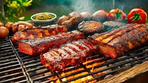

Sus orígenes se remontan a la época prehispánica. Precisamente, a los pueblos incas. Versátil, puede variar de acuerdo a la región y al país en que se elabore. El locro es un plato que puede variar y adaptarse a la disponibilidad de ingredientes presentes en cada región y/o país donde se prepare
Lista de Ingredientes para su preparacion:
- 2 tazas de maíz blanco remojado
- 1 litro de agua
- 300 gramos de carne de ternera en trozos (paleta, roast beef, etc)
- 300 gramos de carne de cerdo cortado en trozos
- 2 Caldo de Verdura
- 200 gramos de panceta cortado en cubos
- 1 taza de porotos remojados y cocidos
- 2 chorizos cocidos en ruedita
- 2 batatas cortado en trozos
- 1/2 kg de zapallo cortado en trozos
- 2 cucharadas de aceite
- 1 cebolla finamente picada
- 1 cebolla de verdeo picada
- 1 ají picante picado
- 1 cucharada de pimentón
Alimento con muchas calorías y nutrientes, el locro resulta muy adecuado para consumir durante los inviernos o en zonas frías. Tradicionalmente se consume de manera masiva el 1 y el 25 de mayo, día en que se conmemora la formación del primer gobierno patrio argentino, el cual se estableció el 25 de mayo de 1810.
Pasos a seguir para el locro:
- Lavar el maíz blanco y remojarlo en agua por 1 noche. Escurrir y agregar agua limpia nuevamente. Reservar.
- Cocinar el maíz en una cacerola a fuego medio junto al agua por 20 minutos aprox . Reservar.
- En otra olla saltear a fuego medio la carne de ternera, la panceta en cubos, el cerdo (todo en trozos chicos) hasta que se dore ligeramente.
- Sumar el maíz cocido junto al agua, el caldo Knorr y continuar la cocción durante 30 a 40 minutos más. Sumar los chorizos, las batatas, el zapallo en trozos medianos y los porotos.
- Continuar cocinando lentamente por 20 a 40 minutos más aprox. (Incorporar más agua durante su cocción si fuera necesario)
- Revolver de vez en cuando.
- Para la preparacion de la salsa: En una sartén caliente junto al aceite saltear las cebollas picadas y el ají picado.
- Condimentar con el pimentón y servir el locro junto a la salsa picante y a disfrutar.

Asado
Receta para asadito
visitar
Provoleta
Receta para provoleta
visitar
Morrones a la parilla
Receta para morrones
visitar

Chimichurri
Receta para chimi
visitar